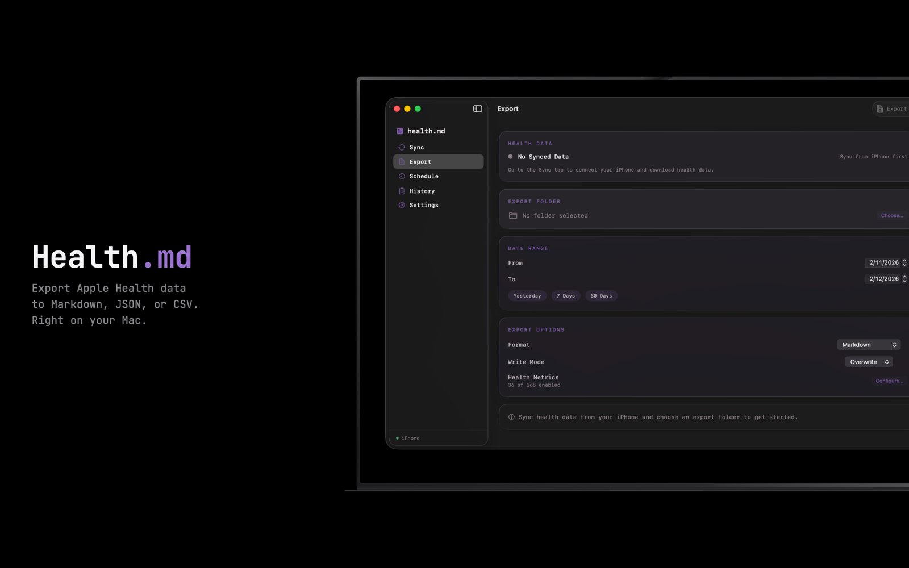
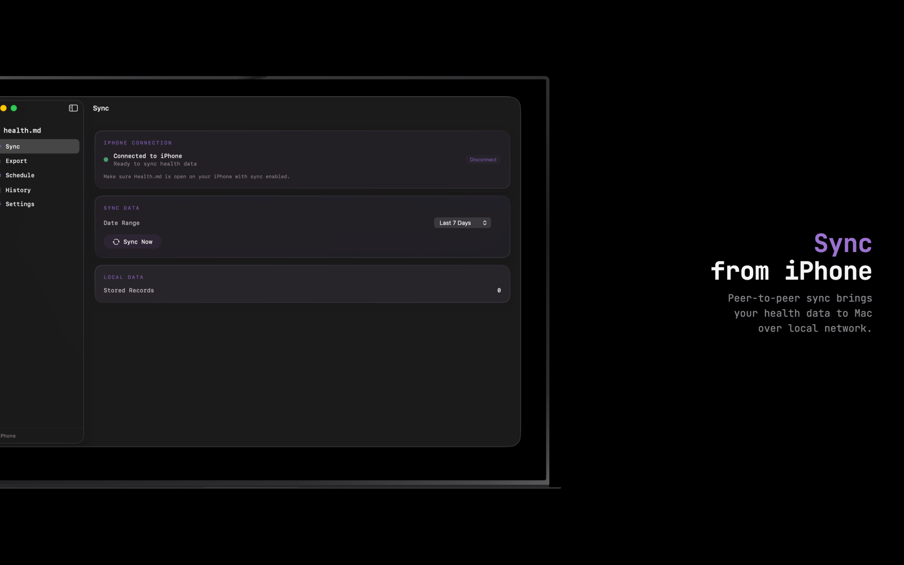
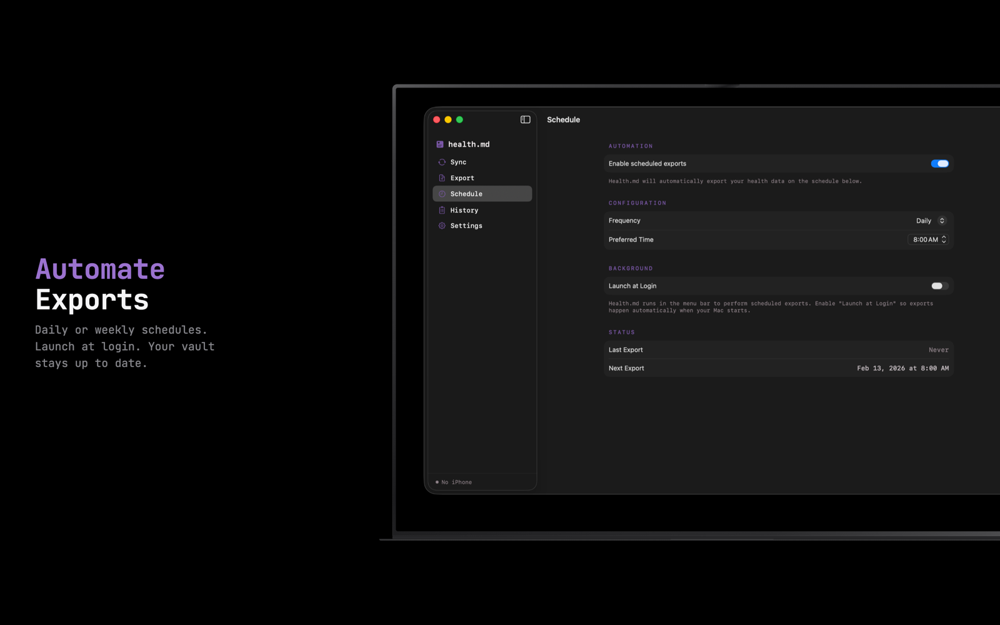
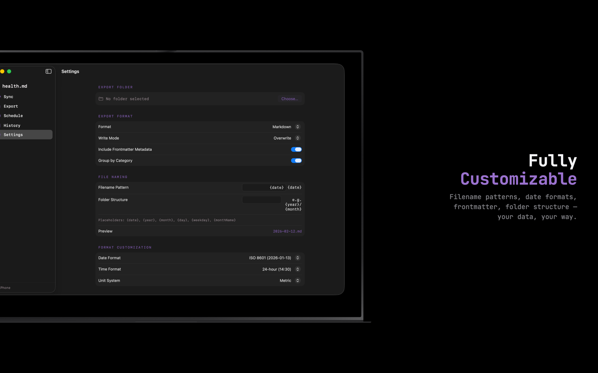

Integrations · Desktop
macOS App
Native Mac companion. Same export engine, native Mac UI, menu bar, and the option to schedule desktop exports while the iPhone fulfills the data.
The Mac app mirrors the iOS feature set with one major addition: it can be the caller of an export, with the iPhone acting as the data source over Mac Sync. The export pipeline runs on the Mac; data flows in over the local network.
Panes




Setup
- Buy the macOS app on the Mac App Store. Same family-share entitlement as the iOS app.
- Open. Sign into the same iCloud account as your iPhone (only used for device discovery).
- On iPhone, turn on Mac Sync. The Mac shows your phone in the Sync pane.
- Pick a vault on Mac (a folder in iCloud Drive, on disk, or anywhere accessible).
- Run an export. Data flows from iPhone → Mac → vault.
This page covers the v1.2 macOS UI.
Annotated highlight variants for the Mac panes are pending — once captured, they'll replace the App Store thumbnails above.